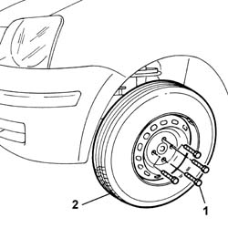

4450B02 left front wheel r r
- Path
- Procedures > 44 SUSPENSION AND WHEELS > 4450 HUBS AND WHEELS > 4450B wheels and components > 4450B02 left front wheel r r
- Kind
- repair procedure (removal / refitting; the operation number is the code)
- Applies to
- all engines; all production periods
- Interactive page
- https://sloeber94.github.io/elrnDB-fPnd/en/#/2752825
Applies to: all engines; all production periods
 Removing
Removing
 Refitting
RefittingPlace the car on a ramp.
For wheels with steel rims, remove the wheel hub cap.
1. With the wheels resting on the ground, loosen the bolts fixing the left front wheel.
Raise the lift.
2. Completely undo the bolts and remove the steel or alloy rimmed wheel.

Applies to: all engines; all production periods
Refitting
RemovingFit the wheel and fix it using the bolts without tightening them.
Lower the vehicle until the wheel is touching the ground.
Tighten the steel rimmed wheel bolts to the recommended torque.
 | Fastening | Component | Ø | Value (daNm) |
|---|---|---|---|---|
- | Bolt | FRONT WHEEL FIXING BOLT | M12 x 1.25 | (Steel rim) 8.6 |
Tighten the aloy rimmed wheel bolts to the recommended torque.
| Fastening | Component | Ø | Value (daNm) |
|---|---|---|---|---|
- | Bolt | FRONT WHEEL FIXING BOLT | M12 x 1.25 | (Alloy rim) 9.8 |
For steel rimmed wheels, fit the wheel hub.
Remove the vehicle from the lift.
Topics that link to this page (32)
- S17 FRONT SUSPENSION NOISE (WHISTLE/HUM)
- S18 FRONT SUSPENSION NOISE (KNOCK)
- S19 FORECARRIAGE TRANSVERSE VIBRATIONS
- S27 REAR SUSPENSION NOISE (WHISTLE/HUM)
- 1048B48 heat exchanger duct - r r
- 1048B50 turbo charger intercooler - r + r
- 1820A20 release cable - r + r
- 2710A40 l/h or r/h drive shaft (one) - r + r
- 3310A30 FRONT BRAKE CALIPER (one) - R.R.
- 3310A50 front brake discs r r
- 3310A57 front brake calliper bracket - r r
- 3310A59 front brake disc guard - r r
- 3310A60 front brake pads - replace
- 3330E10 FLEXIBLE PIPE (one), left or right, to front brake calipers - R.R .
- 3330E52 RIGID PIPE from master cylinder to LEFT front brake - R.R.
- 3340A30 rpm sensor (one) of one l/h or r/h front wheel - r+r
- 3340B55 central brake pipe to lh - r r
- 4410A12 front suspension damper (one), lh or rh - for mcpherson strut system - includes dismantling/re-building of assembly at bench r r
- 4410B40 lower wishbone (with balljoint) of left or right front suspension (one) - r+r -check wheel geometry separately
- 4410c11 front suspension anti-roll bar end anchorage link (one), lh or rh - r r
- 4450B04 right front wheel r r
- 4450B06 left rear wheel r r
- 4450B08 right rear wheel r r
- 5040A40 air conditioner condenser - r+r
- 5040A44 air conditioner dehydrating filter/accumulator - r+r
- 5040A50 pipe from compressor to air conditioner condenser - r+r
- 5040A58 pipe from expansion valve to compressor - r+r
- 5040A60 pipe from condenser to evaporator (expansion pipe) - r+r
- 5040B20 AIR CONDITIONING SYSTEM' PRESSURE LINEAR TRANSDUCER - R.R.
- 5550C22 l/h or r/h side flasher (one) - r+r
- 5550C54 (One), side repeater BULB left or right - R.R.
- 7055A24 MOULDING ON FRONT WHEEL ARCH ONE LH OR RH R R